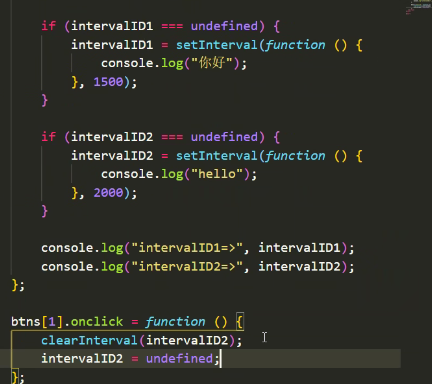

# BOM
- BOM 是 Browser Object Model 的缩写，即浏览器对象模型。BOM 是 JavaScript 在 web 上的核心，它提供了一些对象，用于暴露浏览器的功能 ¹³。BOM 的核心对象是 window 对象，它表示当前的浏览器窗口，其中包含了一系列用于操作或访问浏览器的方法和属性 ³⁴。例如，你可以使用 window 对象来打开或关闭新窗口、移动或调整窗口大小、获取或修改当前页面的 URL、访问浏览器历史记录、获取浏览器信息、获取屏幕信息等。
# window 对象
- window 对象的属性：
- 属性功能：
- window.innerwidth 获取浏览器内部的宽度（视口宽度）(不包含浏览器的左右两边边框)
- window.innerHeight 获取浏览器内部的高度（视口高度）(不包含浏览器的菜单栏和地址栏以及上下的边框)
- window.outerwidth 获取整个浏览器的宽度
- window.outerHeight 获取整个浏览器的高度
- 属性功能：
- window 对象中存在 name 属性和 top 属性，所以应避免使用全局变量名也叫 name 和 top
- 如果使用了 name，name 的值会变成字符串类型
- window.top 的属性值会指向 window 自身，top 的属性值无法修改
- window 对象的方法：
- window.confirm ()：方法，显示带有一段消息以及确认按钮和取消按钮的对话框。返回值是
布尔值，点击确定返回 true，点击取消返回 false
- window.confirm ()：方法，显示带有一段消息以及确认按钮和取消按钮的对话框。返回值是
# 延时器与定时器
延时器，延迟多久以后，执行一次代码块，总共执行一次
- 使用 setTimeout () 函数来设置一个延时器，它可以在指定的毫秒数后执行一次给定的函数或代码。例如，setTimeout (function (){console.log (“Hello”)}, 1000) 可以在 1 秒后打印 “Hello”。如果要取消一个延时器，可以使用 clearTimeout () 函数，并传入 setTimeout () 返回的标识符。
定时器，每间隔多久执行一次代码块，不断执行
- 使用 setInterval () 函数来设置一个定时器，它可以按照指定的毫秒数周期性地执行给定的函数或代码。例如，setInterval (function (){console.log (“Hi”)}, 2000) 可以每隔 2 秒打印 “Hi”。如果要取消一个定时器，可以使用 clearInterval () 函数，并传入 setInterval () 返回的标识符。
window 对象提供了两个方法：
- window.setTimeout () 开启延时器
- window.clearTimeout () 清除延时器
- window.setInterval () 开启定时器
- window.clearInterval () 清除定时器
语法：
// 延时器let timeoutID = window.setTimeout(function[, delay, arg1, arg2, ...])
let timeoutID = window.setTimeout(function[, delay])
let timeoutID = window.setTimeout("console.log('aa');console.log('bb');", 3000)
window.setTimeout(function(a, b, c) {
console.log(a);
console.log(b);
console.log(c)
}, 2000, 100, 200, 300) // 传递参数 a === 100, b === 200, c === 300
window.clearTimeout(timeoutID) // 清除延时器
// 定时器let timeoutID = window.setInterval(function[, delay, arg1, arg2, ...])
let timeoutID = window.setInterval(function[, delay])
let timeoutID = window.setInterval("console.log('aa');console.log('bb');", 3000)
window.setInterval(function(a, b, c) {
console.log(a);
console.log(b);
console.log(c)
}, 2000, 100, 200, 300) // 传递参数 a === 100, b === 200, c === 300
window.clearInterval(timeoutID) // 清除定时器
定时器开启限制叠加执行次数的方法及清除后重新开启：

let btn = document.querySelectorAll("button")
let div = document.querySelector(".conBox")
let btn1 = btn[0]
let btn2 = btn[1]
let timeIntervallet timeInterval2btn1.addEventListener("click", function widthAdd() {
if (timeInterval === undefined) {
timeInterval = setInterval(() => {
if (parseInt(div.style.width) >= 400) {
clearInterval(timeInterval)
timeInterval = undefined
return}div.style = `width: ${div.clientWidth + 3}px; left: ${div.offsetLeft}px;`
}, 500)
}})
btn2.addEventListener("click", function marginAdd() {
if (timeInterval2 === undefined) {
timeInterval2 = setInterval(() => {
if (parseInt(div.style.left) >= 300) {
clearInterval(timeInterval2)
timeInterval2 = undefined
return}div.style = `left: ${div.offsetLeft + 10}px; width: ${div.clientWidth}px;`
}, 500)
}})
# 封装原生 js 缓慢动画框架
封装原生 js 缓动动画框架
难点目标，为了让大家熟悉掌握之前学过的知识以后 工作实际开发的时候，大概率会使用第三方库
缓动动画的意思就是动画变化速度不是匀速，缓动动画的意思是动画变化速度越来越慢也就是越接近月标值，速度就越慢计算缓慢动画速度公式: (目标值 - 当前值) / 10
任意一个数值属性
<!DOCTYPE html><html lang="en"><head><meta charset="UTF-8"><meta http-equiv="X-UA-Compatible" content="IE=edge"><meta name="viewport" content="width=device-width, initial-scale=1.0"><title>Document</title>
<style>
* {
margin: 0;
padding: 0;
}div {
width: 100px;
height: 80px;
background: red;
/* opacity 设置透明度 取值 0~1 不需要带单位 */opacity: 0.5;
margin-bottom: 10px;
}p {
width: 100px;
height: 80px;
background: skyblue;
position: absolute;
left: 200px;
top: 300px;
z-index: 0;
}button {
margin: 10px 0;
}</style></head><body><button>按钮1触发div的动画</button>
<div>div内容</div>
<button>按钮2触发p的动画</button>
<p>p内容</p>
<script>
// 封装原生 js 缓动动画框架 难点 目标，为了让大家熟悉掌握之前学过的知识 以后工作实际开发的时候，大概率会使用第三方库// 缓动动画的意思就是动画变化速度不是匀速，缓动动画的意思是动画变化速度越来越慢 也就是越接近目标值，速度就越慢// 计算缓慢动画速度公式: (目标值 - 当前值) / 10// 封装根据 CSS 选择器获取 dom 对象的函数function $(cssSelector) {
var dom = document.querySelectorAll(cssSelector);
if (dom.length === 0) {
return null;
}if (dom.length === 1) {
return dom[0];
}return dom;
}// 封装获取计算后样式属性值的函数function getStyle(dom, attr) {
return window.getComputedStyle(dom)[attr];
}/*** 封装 animate 缓慢动画框架
* @param {object} dom* @param {string} attr* @param {number} target* @returns 无
*/
function animate(dom, attr, target) {
//dom 对象也是 js 的对象的一种，所以可以给 dom 对象添加属性// 清除之前的定时器window.clearInterval(dom.timerId);
// 开启定时器dom.timerId = window.setInterval(function () {
console.log("定时器ing");
// 获取当前 attr 对应的属性值var currentVal = parseInt(getStyle(dom, attr));
// 如果当前 attr 对应的属性值已经达到目标值，那么我们就需要清除定时器if (currentVal === target) {
clearInterval(dom.timerId);
return;
}// 计算运动速度// 计算缓慢动画速度公式: (目标值 - 当前值) / 10var speed = (target - currentVal) / 10;
// console.log("target=>", target);// console.log("currentVal=>", currentVal);// console.log("speed=>", speed);// console.log("");// 因为 speed 在计算过程中，会出现小数，容易导致达不到目标值的问题，所以我们需要对速度进行处理//speed = Math.floor (speed); // 速度为负时，向下取整//speed = Math.ceil (speed); // 速度为正时，向上取整speed = speed >= 0 ? Math.ceil(speed) : Math.floor(speed);
// 给 dom 对象设置对应的 attr 属性值dom.style[attr] = currentVal + speed + "px";
}, 800);
}// 获取相关 dom 对象var btns = $("button");
var objDiv = $("div");
var objP = $("p");
// 给按钮绑定鼠标点击事件btns[0].onclick = function () {
animate(objDiv, "width", 500);
// animate(objDiv, "width", 50);// animate(objDiv, "height", 281);// animate(objDiv, "width", 500);}// 给按钮绑定鼠标点击事件btns[1].onclick = function () {
animate(objP, "left", 500);
// animate(objP, "left", -200);// animate(objP, "width", 500);// animate(objP, "height", 200);// animate(objP, "left", 50);}</script></body></html>任意多个数值属性
<!DOCTYPE html><html lang="en"><head><meta charset="UTF-8"><meta http-equiv="X-UA-Compatible" content="IE=edge"><meta name="viewport" content="width=device-width, initial-scale=1.0"><title>Document</title>
<style>
* {
margin: 0;
padding: 0;
}div {
width: 100px;
height: 80px;
background: red;
/* opacity 设置透明度 取值 0~1 不需要带单位 */opacity: 0.5;
margin-bottom: 10px;
}p {
width: 100px;
height: 80px;
background: skyblue;
position: absolute;
left: 200px;
top: 300px;
z-index: 0;
}button {
margin: 10px 0;
}</style></head><body><button>按钮1触发div的动画</button>
<div>div内容</div>
<button>按钮2触发p的动画</button>
<p>p内容</p>
<script>
// 封装原生 js 缓动动画框架 难点 目标，为了让大家熟悉掌握之前学过的知识 以后工作实际开发的时候，大概率会使用第三方库// 缓动动画的意思就是动画变化速度不是匀速，缓动动画的意思是动画变化速度越来越慢 也就是越接近目标值，速度就越慢// 计算缓慢动画速度公式: (目标值 - 当前值) / 10// 封装根据 CSS 选择器获取 dom 对象的函数function $(cssSelector) {
var dom = document.querySelectorAll(cssSelector);
if (dom.length === 0) {
return null;
}if (dom.length === 1) {
return dom[0];
}return dom;
}// 封装获取计算后样式属性值的函数function getStyle(dom, attr) {
return window.getComputedStyle(dom)[attr];
}/*** 封装 animate 缓慢动画框架
* @param {object} dom* @param {string} attr* @param {number} target* @returns 无
*/
/* function animate (dom, attr, target) {//dom 对象也是 js 的对象的一种，所以可以给 dom 对象添加属性
// 清除之前的定时器
window.clearInterval (dom.timerId);
// 开启定时器
dom.timerId = window.setInterval (function () {console.log ("定时器 ing");// 获取当前 attr 对应的属性值
var currentVal = parseInt (getStyle (dom, attr));
// 如果当前 attr 对应的属性值已经达到目标值，那么我们就需要清除定时器
if (currentVal === target) {clearInterval (dom.timerId);
return;
}
// 计算运动速度
// 计算缓慢动画速度公式: (目标值 - 当前值) / 10
var speed = (target - currentVal) / 10;
//console.log ("target=>", target);//console.log ("currentVal=>", currentVal);//console.log ("speed=>", speed);//console.log ("");// 因为 speed 在计算过程中，会出现小数，容易导致达不到目标值的问题，所以我们需要对速度进行处理
//speed = Math.floor (speed); // 速度为负时，向下取整
//speed = Math.ceil (speed); // 速度为正时，向上取整
speed = speed >= 0 ? Math.ceil (speed) : Math.floor (speed);
// 给 dom 对象设置对应的 attr 属性值
dom.style [attr] = currentVal + speed + "px";
}, 15);
} */
function animate(dom, obj) {
// 清除之前的定时器window.clearInterval(dom.timerId);
// 开启定时器dom.timerId = window.setInterval(function () {
console.log("定时器ing");
// 使用一个 flag 变量，保存所有 attr 属性是否已经达到目标值 true 就表示所有属性已经达到目标值var flag = true;
//for...in 遍历 obj 对象for (var attr in obj) {
// 目标值var target = obj[attr];
// 获取当前 attr 对应的属性值var currentVal = parseInt(getStyle(dom, attr));
// 如果当前 attr 对应的属性值已经达到目标值，那么我们就需要清除定时器/* if (currentVal === target) {clearInterval(dom.timerId);
return;
} */
// 计算运动速度// 计算缓慢动画速度公式: (目标值 - 当前值) / 10var speed = (target - currentVal) / 10;
speed = speed >= 0 ? Math.ceil(speed) : Math.floor(speed);
// 给 dom 对象设置对应的 attr 属性值dom.style[attr] = currentVal + speed + "px";
if (currentVal !== target) { // 如果当前某个属性值没有达到对应的目标值
flag = false;
}}// 需要保存所有属性都达标了目标值，才清除定时器if (flag) {
clearInterval(dom.timerId);
return;
}}, 15);
}// 获取相关 dom 对象var btns = $("button");
var objDiv = $("div");
var objP = $("p");
// 给按钮绑定鼠标点击事件btns[0].onclick = function () {
// animate(objDiv, "height", 281);// animate(objDiv, "width", 500);// animate(objDiv, "font-size", 30);// animate(objDiv, "width", 50);// animate(objDiv, "width", 500);animate(objDiv, {
"height": 281,
"width": 500,
"font-size": 30
});
/* animate(objP, {"left": 376
}); */
}// 给按钮绑定鼠标点击事件btns[1].onclick = function () {
// animate(objP, "left", 500);// animate(objP, "left", -200);// animate(objP, "width", 500);// animate(objP, "height", 200);// animate(objP, "left", 50);animate(objP, {
"left": 376
});
}</script></body></html>添加回调函数
<!DOCTYPE html><html lang="en"><head><meta charset="UTF-8"><meta http-equiv="X-UA-Compatible" content="IE=edge"><meta name="viewport" content="width=device-width, initial-scale=1.0"><title>Document</title>
<style>
* {
margin: 0;
padding: 0;
}div {
width: 100px;
height: 80px;
background: red;
/* opacity 设置透明度 取值 0~1 不需要带单位 */opacity: 0.5;
margin-bottom: 10px;
}p {
width: 100px;
height: 80px;
background: skyblue;
position: absolute;
left: 200px;
top: 300px;
z-index: 0;
}button {
margin: 10px 0;
}</style></head><body><button>按钮1触发div的动画</button>
<div>div内容</div>
<button>按钮2触发p的动画</button>
<p>p内容</p>
<script>
// 封装原生 js 缓动动画框架 难点 目标，为了让大家熟悉掌握之前学过的知识 以后工作实际开发的时候，大概率会使用第三方库// 缓动动画的意思就是动画变化速度不是匀速，缓动动画的意思是动画变化速度越来越慢 也就是越接近目标值，速度就越慢// 计算缓慢动画速度公式: (目标值 - 当前值) / 10// 封装根据 CSS 选择器获取 dom 对象的函数function $(cssSelector) {
var dom = document.querySelectorAll(cssSelector);
if (dom.length === 0) {
return null;
}if (dom.length === 1) {
return dom[0];
}return dom;
}// 封装获取计算后样式属性值的函数function getStyle(dom, attr) {
return window.getComputedStyle(dom)[attr];
}/*** 封装 animate 缓慢动画框架
* @param {object} dom* @param {string} attr* @param {number} target* @returns 无
*/
/* function animate (dom, attr, target) {//dom 对象也是 js 的对象的一种，所以可以给 dom 对象添加属性
// 清除之前的定时器
window.clearInterval (dom.timerId);
// 开启定时器
dom.timerId = window.setInterval (function () {console.log ("定时器 ing");// 获取当前 attr 对应的属性值
var currentVal = parseInt (getStyle (dom, attr));
// 如果当前 attr 对应的属性值已经达到目标值，那么我们就需要清除定时器
if (currentVal === target) {clearInterval (dom.timerId);
return;
}
// 计算运动速度
// 计算缓慢动画速度公式: (目标值 - 当前值) / 10
var speed = (target - currentVal) / 10;
//console.log ("target=>", target);//console.log ("currentVal=>", currentVal);//console.log ("speed=>", speed);//console.log ("");// 因为 speed 在计算过程中，会出现小数，容易导致达不到目标值的问题，所以我们需要对速度进行处理
//speed = Math.floor (speed); // 速度为负时，向下取整
//speed = Math.ceil (speed); // 速度为正时，向上取整
speed = speed >= 0 ? Math.ceil (speed) : Math.floor (speed);
// 给 dom 对象设置对应的 attr 属性值
dom.style [attr] = currentVal + speed + "px";
}, 15);
} */
/* function animate (dom, obj) {// 清除之前的定时器
window.clearInterval (dom.timerId);
// 开启定时器
dom.timerId = window.setInterval (function () {console.log ("定时器 ing");// 使用一个 flag 变量，保存所有 attr 属性是否已经达到目标值 true 就表示所有属性已经达到目标值
var flag = true;
//for...in 遍历 obj 对象
for (var attr in obj) {// 目标值
var target = obj [attr];
// 获取当前 attr 对应的属性值
var currentVal = parseInt (getStyle (dom, attr));
// 计算运动速度
// 计算缓慢动画速度公式: (目标值 - 当前值) / 10
var speed = (target - currentVal) / 10;
speed = speed >= 0 ? Math.ceil (speed) : Math.floor (speed);
// 给 dom 对象设置对应的 attr 属性值
dom.style [attr] = currentVal + speed + "px";
if (currentVal !== target) { // 如果当前某个属性值没有达到对应的目标值flag = false;
}
}
// 需要保存所有属性都达标了目标值，才清除定时器
if (flag) {clearInterval (dom.timerId);
return;
}
}, 15);
} */
// 回调函数是函数需要满足一定条件以后才会被调用，回过头来调用function animate(dom, obj, callback) {
// 清除之前的定时器window.clearInterval(dom.timerId);
// 开启定时器dom.timerId = window.setInterval(function () {
console.log("定时器ing");
// 使用一个 flag 变量，保存所有 attr 属性是否已经达到目标值 true 就表示所有属性已经达到目标值var flag = true;
//for...in 遍历 obj 对象for (var attr in obj) {
// 目标值var target = obj[attr];
// 获取当前 attr 对应的属性值var currentVal = parseInt(getStyle(dom, attr));
// 计算运动速度// 计算缓慢动画速度公式: (目标值 - 当前值) / 10var speed = (target - currentVal) / 10;
speed = speed >= 0 ? Math.ceil(speed) : Math.floor(speed);
// 给 dom 对象设置对应的 attr 属性值dom.style[attr] = currentVal + speed + "px";
if (currentVal !== target) { // 如果当前某个属性值没有达到对应的目标值
flag = false;
}}// 需要保存所有属性都达标了目标值，才清除定时器if (flag) {
// 动画完成以后，清除定时器clearInterval(dom.timerId);
// 动画完成以后，如果存在 callback 参数，并且 callback 参数值是一个函数，我们才需要调用 callback// console.log("callback=>", callback, typeof callback);if (callback !== undefined) {
if (typeof callback === "function") {
callback();
}}/* if( callback && typeof callback === "function"){callback();
} */
return;
}}, 15);
}// 获取相关 dom 对象var btns = $("button");
var objDiv = $("div");
var objP = $("p");
// 给按钮绑定鼠标点击事件btns[0].onclick = function () {
// animate(objDiv, "height", 281);// animate(objDiv, "width", 500);// animate(objDiv, "font-size", 30);// animate(objDiv, "width", 50);// animate(objDiv, "width", 500);/* animate(objDiv, {"height": 281,
"width": 500,
"font-size": 30
}); */
/* animate(objP, {"left": 376
}); */
/* animate(objDiv, {"height": 281
});
animate(objDiv, {"width": 500
}); */
/* animate(objDiv, {"height": 281,
"width": 500
}); */
/* animate (objDiv, {"height": 281,
}, function () {console.log ("我是回调函数，哈哈哈，我是动画完成以后才会被调用执行的");}); */
/* animate(objDiv, {"height": 281,
}, function () {animate(objDiv, {"width": 500
});
}); */
animate(objDiv, {
"width": 500
}, function () {
animate(objDiv, {
"height": 281
});
});
}// 给按钮绑定鼠标点击事件btns[1].onclick = function () {
// animate(objP, "left", 500);// animate(objP, "left", -200);// animate(objP, "width", 500);// animate(objP, "height", 200);// animate(objP, "left", 50);/* animate(objP, {"left": 376
}, "abc"); */
animate(objP, {
"left": 376
});
}</script></body></html>
# 页面（窗口）事件
页面窗口加载事件是指当页面的所有内容（包括文档结构、图像、脚本文件、CSS 文件等）都完全加载完成后触发的事件。你可以使用 window.onload 或者 window.addEventListener ("load", function (){}) 来注册这个事件的处理函数。
这个事件和 document.DOMContentLoaded 事件不同，后者只要页面 DOM 加载完成就触发，无需等待依赖资源的加载。
document.DOMContentLoaded 不能使用 on 方式，需要使用事件监听方式
window 对象的常见事件
<!DOCTYPE html><html lang="en"><head><meta charset="UTF-8"><meta http-equiv="X-UA-Compatible" content="IE=edge"><meta name="viewport" content="width=device-width, initial-scale=1.0"><title>Document</title>
<style>
body {
height: 4000px;
}</style><script>
// 传统绑定方式 给 window 对象绑定 load 事件/* window.onload = function () {var objDiv = document.getElementById("myDiv");console.log(objDiv);
}
window.onload = function () {var objP = document.querySelector("p");console.log(objP);
} */
// 事件监听方式 给 window 对象绑定 load 事件/* window.addEventListener("load", function () {var objDiv = document.getElementById("myDiv");console.log(objDiv);
});
window.addEventListener("load", function () {var objP = document.querySelector("p");console.log(objP);
}); */
window.onload = function () {
console.log("window对象的load事件");
var objDiv = document.getElementById("myDiv");
console.log(objDiv);
var objP = document.querySelector("p");
console.log(objP);
}// 注意: document 对象绑定 DOMContentLoaded 事件，需要使用事件监听方式/* document.onDOMContentLoaded = function () {var objDiv = document.getElementById("myDiv");console.log(objDiv);
var objP = document.querySelector("p");console.log(objP);
} */
document.addEventListener("DOMContentLoaded", function () {
console.log("document对象DOMContentLoaded事件");
var objDiv = document.getElementById("myDiv");
console.log(objDiv);
var objP = document.querySelector("p");
console.log(objP);
});
</script></head><body><div id="myDiv">div的内容</div>
<p>p段落</p>
<script>
// 页面（窗口）加载事件（两种）// 第一种. window 对象的 load 事件，当页面 DOM 结构，样式，脚本，图片，视频等文件加载完毕以后才会调用 load 事件// 第二种: document 对象的 DOMContentLoaded 事件 当 DOM 结构加载完毕就会调用 DOMContentLoaded 事件// Window：load 事件，load 事件在整个页面及所有依赖资源如样式表和图片都已完成加载时触发。它与 DOMContentLoaded 不同，后者只要页面 DOM 加载完成就触发，无需等待依赖资源的加载。// Document: DOMContentLoaded 事件，当纯 HTML 被完全加载以及解析时，DOMContentLoaded 事件会被触发，而不必等待样式表，图片或者子框架完成加载。// 调整窗口大小事件，文档视图调整大小时会触发 resize 事件。/* window.onresize = function () {console.log ("触发 resize 事件");// 只读的 Window 属性 innerWidth 返回以像素为单位的窗口的内部宽度。如果垂直滚动条存在，则这个属性将包括它的宽度。
console.log ("window.innerWidth=>", window.innerWidth);console.log ("document.documentElement.clientWidth=>", document.documentElement.clientWidth);console.log ("document.body.clientWidth=>", document.body.clientWidth);console.log ("");} */
</script></body></html>
# 调整窗口大小事件
- 调整窗口大小事件是指当浏览器窗口或框架被调整大小时触发的事件。你可以使用 onresize 属性或者 window.addEventListener ("resize", function (){}) 来注册这个事件的处理函数。
- 利用这个事件，你可以跟踪窗口大小的变化来动态调整页面的元素显示。
# window.location 对象
location 对象是 window 对象的一个部分，包含有关当前 URL 的信息。²³ 你可以通过 window.location 属性来访问 location 对象。
location 对象的 href 属性存放的是文档的完整 URL，其他属性则分别描述了 URL 的各个部分，如 host、hostname、port、protocol 等。
你还可以使用 location 对象的方法来控制浏览器显示的文档，如 assign ()、reload ()、replace () 等。
<!DOCTYPE html><html lang="en"><head><meta charset="UTF-8"><meta http-equiv="X-UA-Compatible" content="IE=edge"><meta name="viewport" content="width=device-width, initial-scale=1.0"><title>Document</title>
</head><body><button>按钮1</button>
<button>location.assign()</button>
<button>location.replace()</button>
<button>location.reload()</button>
<script>
// BOM 包括 window 对象//window 对象包括 document, location, history, navigator, screen 对象等// console.log(window);// console.log(window.location);// console.log(location);// window.location//window.location 只读属性，返回一个 Location 对象，其中包含有关文档当前位置的信息。// Location 对象 https://developer.mozilla.org/zh-CN/docs/Web/API/Location// Location 接口表示其链接到的对象的位置（URL）。所做的修改反映在与之相关的对象上。 Document 和 Window 接口都有这样一个链接的 Location，分别通过 Document.location 和 Window.location 访问。// URL 一般指统一资源定位系统// URL 可以认为由 4 部分组成：协议、主机、端口、路径// URL 的一般语法格式为：// protocol :// hostname[:port] / path / [:parameters][?query]#fragment// 比如 https://www.mi.com/shop/buy/detail?product_id=10000203&selected=10000203#bottom// 协议是 https://// 主机是 www.mi.com// 端口 https:// 协议默认端口号是 443 http:// 协议默认端口号是 80// 路径 shop/buy/detail// console.log(window.location);//location 对象中常用属性//location.href 包含整个 URL 的一个 DOMString//location.protocol (en-US) 包含 URL 对应协议的一个 DOMString，最后有一个 ":"。//location.host 包含了域名的一个 DOMString，可能在该串最后带有一个 ":" 并跟上 URL 的端口号。//location.hostname 包含 URL 域名的一个 DOMString。//location.port (en-US) 包含端口号的一个 DOMString。//location.pathname (en-US) 包含 URL 中路径部分的一个 DOMString，开头有一个 /。//location.search 包含 URL 参数的一个 DOMString，开头有一个 “?”。//location.hash 包含块标识符的 DOMString，开头有一个 #。console.log(window.location);
console.log(window.location.href);
console.log(window.location.protocol);
console.log(window.location.host);
console.log(window.location.hostname);
console.log(window.location.port);
console.log(window.location.pathname);
console.log(window.location.search);
console.log(window.location.hash);
var btns = document.querySelectorAll("button");
btns[0].onclick = function () {
console.log("你点击了按钮");
// 获取 location 对象的 href 属性console.log(window.location.href);
// 设置 location 对象的 href 属性window.location.href = "https://www.baidu.com";
}//location 对象的常见方法//location 对象方法 返回值//location.assign (网址) 跟 location.href 一样，可以跳转页面 (也称为重定向页面) 记录历史，可以实现后退功能//location.replace (网址) 替换当前页面，不记录浏览历史，所以不可以实现后退功能//location.reload () 重新加载页面，相当于点了刷新，或者按了 f5btns[1].onclick = function () {
location.assign("https://www.jd.com");
};
btns[2].onclick = function () {
location.replace("https://www.taobao.com");
};
btns[3].onclick = function () {
location.reload();
};
</script></body></html>
# window.history 对象
- window.history 对象是一个只读属性，用来获取 History 对象的引用，History 对象提供了操作浏览器会话历史（浏览器地址栏中访问的页面，以及当前页面中通过框架加载的页面）的接口。
- 你可以使用 history 对象的方法来控制浏览器的回退、前进和跳转功能，如 back ()、forward ()、go () 等。
- 你还可以使用 history 对象的 pushState () 和 replaceState () 方法来修改浏览器历史记录中的当前状态，并改变 URL 而不刷新页面。
# window.navigator 对象
window.navigator 对象是一个只读属性，返回一个 Navigator 对象的引用，可以用它来查询一些关于运行当前脚本的应用程序的相关信息。
navigator 对象有一些属性和方法，可以用来获取浏览器的名称、版本、代理、平台、语言等信息，以及判断浏览器是否在线、是否支持 cookie 等功能。
但是需要注意的是，navigator 对象的信息可能不准确或者被修改，不应该用来检测浏览器版本或特性。
<!DOCTYPE html><html lang="en"><head><meta charset="UTF-8"><meta http-equiv="X-UA-Compatible" content="IE=edge"><meta name="viewport" content="width=device-width, initial-scale=1.0"><title>Document</title>
</head><body><button>跳转页面</button>
<script>
// BOM 中的 navigator 对象// 参考文档: https://developer.mozilla.org/zh-CN/docs/Web/API/Navigatorconsole.log(window.navigator);
// NavigatorID.userAgent (en-US) 只读 返回当前浏览器的用户代理。console.log(window.navigator.userAgent);
var btn = document.querySelector("button");
btn.onclick = function () {
// 字符串对象.match () 方法可在字符串内检索指定的值，或找到一个或多个正则表达式的匹配。if ((navigator.userAgent.match(
/(phone|pad|pod|iPhone|iPod|ios|iPad|Android|Mobile|BlackBerry|IEMobile|MQQBrowser|JUC|Fennec|wOSBrowser|BrowserNG|WebOS|Symbian|Windows Phone)/i))) {
window.location.href = "https://m.taobao.com"; // 手机
} else {
window.location.href = "https://www.jd.com"; // 电脑
}}</script></body></html>
# window.screen 对象
你好，这是必应。window.screen 对象是一个特殊的对象，它返回当前渲染窗口中和屏幕有关的属性。例如，你可以通过 window.screen 对象获取屏幕的分辨率、宽度、高度、颜色深度等信息。
<!DOCTYPE html><html lang="en"><head><meta charset="UTF-8"><meta http-equiv="X-UA-Compatible" content="IE=edge"><meta name="viewport" content="width=device-width, initial-scale=1.0"><title>Document</title>
</head><body><script>
// BOM 中的 screen 对象// 参考文档: https://developer.mozilla.org/zh-CN/docs/Web/API/Screen// Screen 接口表示一个屏幕窗口，往往指的是当前正在被渲染的 window 对象，可以使用 window.screen 获取它。// 请注意：由浏览器决定提供屏幕对象，此对象一般通过当前浏览器窗口活动状态动态检测来得到。//window.screen.width 返回屏幕的宽度。//window.screen.height 以像素为单位返回屏幕的高度。console.log(window.screen.width);
console.log(window.screen.height);
</script></body></html>
# json 数据
JSON（JavaScript Object Notation）是一种轻量级的数据交换格式 ¹²。它基于 JavaScript 的一个子集，但是也采用了完全独立于语言的文本格式。JSON 易于人阅读和编写，同时也易于机器解析和生成。JSON 可以表示对象、数组、字符串、数值、布尔值和空值等常见的数据类型 ¹³。JSON 在不同的编程语言中都有相应的解析器和库支持。
<!DOCTYPE html><html lang="en"><head><meta charset="UTF-8"><meta http-equiv="X-UA-Compatible" content="IE=edge"><meta name="viewport" content="width=device-width, initial-scale=1.0"><title>Document</title>
</head><body><button>按钮</button>
<script>
// JSON (JavaScript Object Notation) 是一种轻量级的数据格式// JSON 格式要求文件名后缀是.json// JSON 格式数据使用方式跟我们 JS 对象很类似，JSON 格式的属性名必须要使用双引号包裹，不能省略引号// JSON 文件中不能出现注释// JSON 文件中的数据默认只允许单个对象，如果有多个对象，需要放在一个数组里面// 我们学习 ajax 以后，我们可以使用 ajax 读取 json 文件数据var btn = document.querySelector("button");
btn.onclick = function () {
var xhr = new XMLHttpRequest();
xhr.open("GET", "./herolist.json");
xhr.send();
xhr.onreadystatechange = function () {
if (xhr.readyState === 4 && xhr.status === 200) {
console.log(xhr.responseText, typeof xhr.responseText);
// ❤❤❤要记: JSON 字符串数据转成 JSON 对象数据，需要使用 JSON.parse (JSON 字符串)var jsonObj = JSON.parse(xhr.responseText);
console.log(jsonObj);
jsonObj.forEach(function (item) {
console.log(item.cname);
});
}}}</script></body></html>
# 手动触发某个 DOM 对象事件
<!DOCTYPE html> | |
<html lang="en"> | |
<head> | |
<meta charset="UTF-8"> | |
<meta http-equiv="X-UA-Compatible" content="IE=edge"> | |
<meta name="viewport" content="width=device-width, initial-scale=1.0"> | |
<title>Document</title> | |
<style> | |
div { | |
width: 120px; | |
height: 120px; | |
background: skyblue; | |
} | |
</style> | |
</head> | |
<body> | |
<div>div的内容</div> | |
<br /> | |
<button>触发div的click事件</button> | |
<script> | |
/* var objDiv = document.querySelector ("div"); | |
objDiv.onclick = function () { | |
console.log ("this=>", this); | |
console.log ("触发 div 的 click 事件"); | |
this.innerText = "哈哈哈"; | |
this.style.backgroundColor = "pink"; | |
} | |
var btn = document.querySelector ("button"); | |
btn.onclick = function () { | |
console.log ("this=>", this); | |
console.log ("触发 div 的 click 事件"); | |
this.innerText = "哈哈哈"; | |
this.style.backgroundColor = "pink"; | |
} */ | |
/* function fn () { | |
console.log ("this=>", this); | |
console.log ("触发 div 的 click 事件"); | |
this.innerText = "哈哈哈"; | |
this.style.backgroundColor = "pink"; | |
} | |
var objDiv = document.querySelector ("div"); | |
//objDiv.onclick = function () { | |
// fn (); | |
// // 等同于 | |
// //window.fn (); | |
// // 所以 fn 里面的 this 会指向 window 对象 | |
// //this 对象的值会指向调用这个函数或者这个方法的调用者 | |
// } | |
objDiv.onclick = fn; | |
var btn = document.querySelector ("button"); | |
btn.onclick = fn; */ | |
var objDiv = document.querySelector("div"); | |
objDiv.onclick = function () { | |
console.log("this=>", this); | |
console.log("触发div的click事件"); | |
this.innerText = "哈哈哈"; | |
this.style.backgroundColor = "pink"; | |
} | |
var btn = document.querySelector("button"); | |
btn.onclick = function () { | |
// console.dir(objDiv); | |
// console.dir(objDiv.onclick); | |
// console.dir(objDiv.onmouseover); | |
// console.dir(objDiv.onmouseout); | |
// 手动触发某个 DOM 对象的指定事件 (手动触发传统绑定方式) | |
objDiv.onclick(); | |
}; | |
</script> | |
</body> | |
</html> |
# 节流阀（开关变量）
<!DOCTYPE html> | |
<html lang="en"> | |
<head> | |
<meta charset="UTF-8"> | |
<meta http-equiv="X-UA-Compatible" content="IE=edge"> | |
<meta name="viewport" content="width=device-width, initial-scale=1.0"> | |
<title>Document</title> | |
</head> | |
<body> | |
<button>获取手机验证码</button> | |
<script> | |
/* var btn = document.querySelector("button"); | |
btn.onclick = function () { | |
console.log("hello"); | |
} */ | |
/* var btn = document.querySelector ("button"); | |
btn.onclick = function () { | |
setTimeout (function () { | |
console.log ("获取验证码成功"); | |
}, 2000); | |
} */ | |
var btn = document.querySelector("button"); | |
// 定义一个开关变量 true 表示打开状态 false 表示关闭状态 | |
var flag = true; | |
btn.onclick = function () { | |
if (flag) { | |
flag = false; // 关闭 | |
setTimeout(function () { | |
console.log("获取验证码成功"); | |
// 当延时器代码结束以后，我们重新打开开关 | |
flag = true; | |
}, 2000); | |
} | |
} | |
</script> | |
</body> | |
</html> |